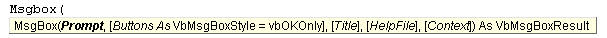
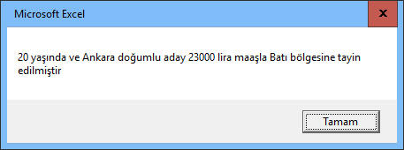
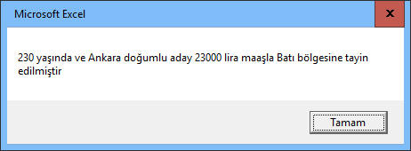
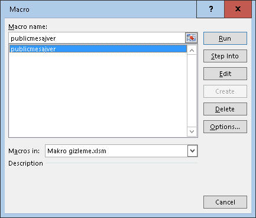

Yeni başlayanlar isterse bu kısmı şimdilik geçebilir. Burayı biraz
ilerleme kaydedip de ilave teknik bilgiye ve aslına bakılacak olursa daha
sağlam bir altyapıya sahip olmak isteyenler için hazırladım. İsterseniz şöyle
hızlıca bir gözatın ve ne hakkında olduğunu görün, ilerde kafanıza sorular
takıldığında tekrar dönüp bakarsınız.
Argüman vs Parametre
Bazı prosedürlerimiz hiçbir parametre olmadan, çağrıldıklarında
doğrudan çalışırlar. Bazıları ise parametre alırlar. Parametreler
prosedür isminden sonra gelen parantezlerin içinde yer alırlar. Ör:
Function KareAl(rakam As Integer)
KareAl=rakam*rakam
End Function
Şimdi bu yukardaki örnekte 'rakam', KareAl fonksiyonunun bir
parametresidir.
Peki argüman nedir? Argüman da işte bu KareAl fonksiyonunu çağırırken
parantez içine yazdığım ifadelere denir.
Yani aslında aynı şeyden yani 'rakam'dan bahsediyoruz. İşte bu rakam
ifadesi, çağrılan prosedür için
parametre,
çağıran
prosedür için ise
argüman adını alır.
Sub test()
Dim a As Integer
a=Application.Inputbox("Bir sayı girin", Type:=1)
sonuc=KareAl(a)
MsgBox "Girdiğiniz sayınını karesi şudur:" & sonuc
End Sub
Bu örnekte çağıran prosedür test() yordamıdır(Sub), ve bu yordam 'a'
değişkenini KareAl fonksiyonuna argüman olarak gönderiyor.
Farkettiyseniz, argüman ve parametrenin aynen yazılması gerekmiyor. a
argümanı, KareAl içine girdiğinde rakam parametresi olarak algılanıyor.
Gördüğünüz gibi aynı şeyin farklı yönlerden görünüşüne benziyor bu
iki ifade, ve birçok yerde birbiri yerine bile kullanıldığını
görebilirsiniz.
Çağırma şekilleri
Sub ve Function prosedürlerin çağrılmalarında küçük farklar
bulunmaktadır. Hemen bakalım:
Bir Sub prosedürü çağırmanın da kendi içinde iki yolu var.
Call terimini kullanarak veya
kullanmayarak.
- Call ifadesini yazdıysanız parantez
kullanmak zorundasınız
- Call yazmadıysanız parantez olmadan yazarsınız. (Ben şahsen Call yazmadan Sub çağırmanızı önermem, zira bu ifade ile o satırda başka bir prosedürün çağrıldığı hemen belli olmaktadır.)
Function çağırmanın da iki yolu var
- Eğer dönen değeri bir değişkende
depolayacaksanız parantez zorunludur
- Dönen değerle ilgilenmiyorsanız parantez gerekmez
Yukarda KareAl fonksiyonumuza ek olarak aşağıda bir Sub prosedürümüz
ve bir fonksiyonumuz daha var.
Sub Bilgiler(isim as String, yas as Integer, hayattamı as Boolean)
MsgBox "Kişi " & yas & " yaşında,ismi " & isim & " ve kendisi " & IIf(True, "hayatta", "hayatta değil")
End Sub
Function CokSelamSoyle(rakam As Integer)
'bu aslında bir Sub olsa daha iyi olurdu, ancak örnek olması adına function kullandım
CokSelamSoyle=rakam*100
MsgBox CokSelamSoyle & " kez selam olsun"
End Function
Bunları aşağıdaki şekillerde çağırabiliriz;
Call Bilgiler("Volkan", 37, True) 'Sub çağırıken call varsa parantez zorunlu
Bilgiler "Volkan", 37, True 'Sub çağırırken call yoksa parantez zorunlu değil
a=KareAl(10) 'Function çağırırken bir değişkende depolayacağımız için parantez var
CokSelamSoyle 10 'dönen değerle ilgilenmiyoruz, parantez zorunlu değil
Fonksiyonlardan dönen değerle ilgilenmeye ve ilgilenmemeye çok güzel bir
örnek MsgBox fonksiyonudur aslında. Hemen örneğe bakalım
'Kullancıya mesaj vermek istiyorum, kullancıdan bir cevap toplamıycam
Msgbox "İşlem tamam" 'parantez yok
'Kullancıdan bilgi toplayacağım
cevap=MsgBox("Devam edeyim mi?", vbYesNo)
If cevap=vbYes then
'kodlar buraya
End If
İsimli argümanlar(Named arguments)
Bir Sub veya Function prosedürü çağırdığınızda, bu prosedürün parametre tanımında görüldüğü sırasıyla argüman
sağlamamız gerekir. Parametre pozisyonuna bakmadan argüman yazmak istiyorsak isimli argümanlar kullanabiliriz. İsimli argümanı yazmak için Argümanismi:=Değer syntaxını kullanırız.
Mesela aşağıdaki gibi 3 parametreli bir Sub prosedürümüz olsun.
Sub Bilgiler(isim as String, yas as Integer, hayattamı as Boolean)
'kodlar buraya
End Sub
Bu prosedürü isimli veya isimsiz nasıl çağırabiliyoruz bir
bakalım(Sadece Call''lu versiyonları yazalım, Call'suz da yapılabilirdi)
'Klasik yöntem
Call Bilgiler("Volkan", 37, True) 'sadece bu sırada
'İsimli argüman yöntemi, argüman sırası önemli değildir
Call Bilgiler(hayattamı:=True,yas:=37,isim:="Volkan")
Call Bilgiler(yas:=37,hayattamı:=True,isim:="Volkan")
Call Bilgiler(yas:=37,isim:="Volkan",hayattamı:=True)
'3 parametre için toplam 6 kombinasyon var, biz üçünü yazmış olduk
İsimli argümanlar, özellikle Opsiyonel argümanlar çok sayıda varsa oldukça
kullanışlı olmaktadır. Şimdi önce Opsiyonel argümanlara sonra da
ikisinin bir arada kullanılmasına bakalım.
Opsiyonel argümanlar
Bazen prosedürünüze öyle parametreler koymak istersiniz ki, bunlar
seçime bağlı olsun, kullanıcı isterse girsin isterse girmesin. Bunlara
ayrıca varsayılan değer de girebilirsiniz. Yani özellikle kullanıcıların
büyük çoğunluğunun aynı değeri gireceğini umduğunuz değişkenleri opsiyonel
ayarlayıp değer olarak da bu en olası değeri girebilirsiniz.
Opsiyonel parametresi olan bir prosedürü çağırdığımızda bu
parametreyi kullanmazsak, ve varsayılan değer varsa bu değer dikkate
alınır, varsayılan değer yoksa ilgili datatipinin varsayılan değeri kullanırlır,
mesela String için "", Integer için 0 gibi.
Opsiyonel parametrelere argüman sağlanıp sağlanmadığını
IsMissing fonksiyonu ile kontrol
edeblirsiniz. Ancak bu fonksiyon sadece Variant tipteki değişkenler için
kullanılıyor. String, Integer gibi data tiplerindeki bir opsiyonel parametreye
argüman sağlanmış mı diye bakmak için bunların default değerlerini kontrol ederiz. String için
If x="" ,
integer için If x=0 gibi. IsMissignle ilgili MSDN örneği aşağıdaki gibidir:
Sub OptionalArgs(strState As String, Optional varRegion As Variant, _
Optional varCountry As Variant = "USA")
If IsMissing(varRegion) And IsMissing(varCountry) Then
Debug.Print strState
ElseIf IsMissing(varCountry) Then
Debug.Print strState, varRegion
ElseIf IsMissing(varRegion) Then
Debug.Print strState, varCountry
Else
Debug.Print strState, varRegion, varCountry
End If
End Sub
Aşağıdaki kodu çalıştırarak bu örneğin ne sonuçlar döndürdüğünü
inceleyin
Sub test_ops()
OptionalArgs "Teksas"
OptionalArgs "Teksas", "East"
OptionalArgs "London", "England", "UK"
End Sub
Opsiyonel parametreler, parametre listesinde [] içinde görünürler.
Atlamayı düşündüğünüz opsiyonel parametreleri virgül(,) koyarak atlayabilrsiniz.
Aşağıda VBA'ın MsgBox fonksiyonunu görüyoruz. 1 adet zorunlu parametresi
var, o da gösterilecek mesajı barındıran Prompt parametresi, diğerler hep
opsiyoneldir.

DİKKAT:Opsiyonel parametreler, parametre
sıralamasında en sonda yer almalıdır, ondan sonra opsiyonel olmayan bir parametre kullanırsanız
kodunuzu çalıştırmadan önce hata alırsınız.
Opsiyonel ve İsimli argümanlar birarada
Şimdi diyelimki çok sayıda opsiyonel değişkeni olan bir fonksiyonu
çağıracaksınız ama sadece zorunlu olanı bir de aradaki parametrelerden
birini girmek istiyorsunuz. Nasıl yapardınız?
MsgBox'ı alalım yine; Sizin için sadece mesaj ve başlık göstermek
yeterli diyelim. Aşağıdaki yöntemleri uygulayabilirsiiz.
MsgBox "İşlem tamam", vbOKOnly, "Rapor Sonucu" 'Named argüman kullanmıyoruz. Sıra önemli. Mecburen ilgili sırada tek tek yazarız
MsgBox "İşlem tamam", , "Rapor Sonucu" 'Named argüman kullanmıyoruz. Sıra önemli. Gereksizleri virgülle atlarız
MsgBox Title:="Rapor Sonucu", Prompt:="İşlem tamam" 'Named argüman: Sıra farketmez
MsgBox "İşlem tamam", Title:="Rapor Sonucu" 'Prompt parametresi zaten sırasında olduğu için isimli argüman kullanmadı
Sizi bilmem ama bana göre en kullanışlısı ve basiti son seçenektir,
özellikle 8-10 tane parametresi olan ve sadece ilk parametresiyle son
parametresini kullanmak istiyorsam, araya 6 tane virgül koymakla
uğraşmak istemem, onun yerine ilk parametresi için isim kullanmayıp
sonrasında sadece son parametre için isim kullanırım, bu kadar basit.
Mesela
Application.InputBox fonksiyonunu çok kullanacaksınız, bunda
aşağıdaki gibi 2 argüman girmek yeterlidir.
Cevap = Application.InputBox("Bir sayı girin", Type:=1)
ByVal vs ByRef
Bu konu benim uzun zaman kafamı karıştıran bir konuydu, araştırma yaptığımda
karşıma çıkan örnekler hep kafamda canlandırmakta zorlandığım, i ve j'lerin
kullanıldığı soyut örneklerdi. Tanımlar ise MSDN çevirisi veya
varyasyonu olmaktan öteye gitmiyordu. O yüzden ben hem örnekleri verirken hem de
tanımı yaparken biraz daha açıklayıcı olmaya çalışacağım, umarım bunda
başarılı olabilirim.
Şimdi, eğer çağırdığımız prosedüre argüman olarak gönderdiğimiz
değişkenleri bu prosedürde değişikliğe uğratmayı planlıyorsak amma ve
lakin bunlar geri döndüğünde hala aynı değeri korumasını istiyorsak
ByVal ile göndeririz, geldiğinde değeri değişerek gelsin istiyorsak
ByRef ile göndeririz. Biliyorum şuan çok karışık geldi bu ifade, o
yüzden hemen aşağıdaki örneği inceleyelim sonra gelip tekrar bu tanıma
bakarsınız.
Sub çağrılan(ByVal dondugunde_degismeyen_rakam As Integer, ByRef dondugunde_degisen_rakam As Integer)
dondugunde_degismeyen_rakam = 100
dondugunde_degisen_rakam = 500
'çeşitli kodlar
End Sub
Sub çağıran()
Dim a As Integer, b As Integer 'özellikle b'yi integer olarak deklare etmemiz lazım, yoksa b'yi Variant algılar ve Type Mismatch hatası verir
a = 1
b = 2
Call çağrılan(a, b)
Debug.Print a, b '1 500 yazar
End Sub
Gördüğünüz gibi, a değeri döndüğünde hala 1 değerini korudu, b değeri
ise değişerek geldi. Peki neden böyle birşey isteyelim ki? Üstelik bu
örnek ilk paragrafta eleştirdiğim i ve j'li örneklere benzemedi mi, evet
benzedi :) Tabiki bu örnek giriş niteliğindeydi, şimdi örneği biraz daha mantıklı
hale getirelim.
Diyelim ki bi fonksiyona yaş değişkenini göndereceğim, gönderdiğim
yerde bir hesaplamada kullanacağım(garip bir hesaplama olacak ama rakamın
değişmesini istediğim için böyle döngüsel bir işlem olacak), sonra bu
hesap sonucuyla da kişinin hakettiği maaşı hesaplayacağımm, ama geri geldiğinde ona hala
yaş olarak ihtiyacım varsa işte o zaman ByVal ile gönderirim. Bi
de doğumyeri bilgisini göndereceğim. Gittiği prosedürde, doğumyerine göre
kişiyi iki bölgeden birine tayin eden bir hesaplamada kullanacağım, ve
döndüğünde bu yerleşim yeri bilgisi ile gelmesini istiyorum, iyi de peki
orjinal doğumyeri bilgisine de ihtiyacım varsa ne olacak, o zaman onu
çağrıyı yapan prosedürde geçici bir değişkene atarız. Hadi örneğe bakıp
daha iyi anlayalım.
Function maashesapla(ByVal y As Integer, ByRef d As String)
If d = "İstanbul" Then
d = "Doğu"
Else
d = "Batı"
End If
'maaş hesaplama katsayısını elde yöntemi
For i = y To 1 Step -1
y = y + i
Next i
maashesapla = y * 100
End Function
'çağıran prosedürümüz
Sub byvalref_ornek()
Dim dogumyeri As String
yas = 20 'bunu inputboxla sorup daha parametrik de yapabilirdik, ancak örnek basit olsun istedim
dogumyeri = "Ankara" 'bunu da inputboxla sorabilirdik, siz böyle yapın isterseniz
orjinaldogum = dogumyeri ' az sonra değişeceği için şimdiden başka bir dğeişkene atıyorum
MsgBox yas & " yaşında ve " & orjinaldogum & " doğumlu aday " & maashesapla(yas, dogumyeri) & " lira maaşla " & dogumyeri & " bölgesine tayin edilmiştir"
End Sub
Prosedürü çalıştırınca aşağıdaki gibi bir mesajla karşılaşırız.

Burada ne oldu şimdi ona bi bakalım. Yas argümanı y parametresi
olarak maashesapla fonksiyonuna girdi ve bir for-next döngüsünde 230'a
kadar yükseldi, yani y'nin son değeri 20 değil 230dur. Sonra da maaş
hesaplandı(23000), ama ByVal olarak gönderdiğimiz için geri dönerken yine 20
olarak geldi, 230 değil.
Dogumyeri argümanı da d parametersi olarak fonksiyona girdi ve if
kontrolü ile yine kendisine bölge ataması yapıldı ve değeri Batı oldu,
ana prosedüre de bu değerle döndü. Ama biz başta dedik ki, Ankara değerine
de ihtiyacımız olacak, o yüzden ana prosedürde orjinaldogum diye bi
değişken tanımladık ve fonksiyona göndermeden önce dogumyerini bu
değişkene atadık, fonksiyona girdikten sonra atasaydık hiçbir anlamı
olmazdı zira çoktan değişmiş olarak gelecekti.
Peki, diyelim ki yas parametresini ByVal değil de ByRef tanımlasaydık
ne olurdu. İşte şu olurdu :)

İstenmeyen bir sonuç. Doğum yerinde olduğu gibi bunda da
geçici bir değişken tanımlayıp 20 değerini koruyabilirdik ama sizce
gerek var mı, elimizde ByVal diye bir seçenek varken, ne diye fazladan
bir değişken yaratalım ve belleği dolduralım ki, aynı zamanda kodumuzu
uzatalım ki?
Son olarak ByVal ve ByRef konsunda akılda tutulacak bazı hususlar
var, onlara da bakalım:
Akılda tutulacaklar
- Parametreleri varsayılan gönderme şekli ByRef'tir. Yani ByVal
veya ByRef olarak belirtilmemiş bir parametrenin değeri ByRef olarak
yorumlanır(Birçok yüksek seviyeli dilde, Vb.Net dahil, varsayılan
gönderi şekli ByValue'dur. Eğer ilerde VBA kodlarınızı VB.NET veya C#
diline taşıyıp bir VSTO uygulaması yapma gibi planınız olursa sorun çıkmaması adına ByRef ifadelerini mutlaka yazın,
"Nasıl olsa
default değer ByRefmiş, yazmaya gerek yok" diyip boş bırakırsanız
kodlarınızı Vb.Net'e
kopyaladığınızda onlar otomatik olarak ByVal olarak algılanacaktır,
ki bu da sıkıntılara neden olabilir, çünkü siz onların ByRef olarak
işleyeceğini düşünmüştünüz).
- Çağrıda bulunduğumuz prosedürde ByRef olarak gönderilen argüman
mutlaka Dim ile aynı veritipinde tanımlanmalıdır, yoksa hata
alırsınız. Buna Variant tipler de dahildir. O yüzden Dim ile tanımlanmamış bir değeri string tipteki parametreye atamaya çalışırsanız hata alırsınız. Aşağıdaki örnekte olduğu gibi:
'Çağrılan prosedür
Sub rutinkod(ByVal rapor As String)
....
End Sub
'Çağıran kod
Sub kredi ()
Rpr="kredi" 'Rpr varianttir
Rutinkod(Rpr) 'type mismatch hatasi
End Sub
Gönderim şekliniz %90-95 oranlarında ByVal olacaktır, herkesin
söylediği oran yaklaşık bu civardadır. İhtiyaca göre değişmekle
birlikte, eğer gittiği yerde değişme riski yoksa boş da
bırakablirsiniz yani ByRef kalabilir. Belki ilk maddede gözünüzü çok
korkutmuş olabilirim ama pratikte bu kadar korkuya gerek yok, zira
çoğu durumda gönderim şeklinin ByVal veya ByRef olması sizin için
bişey farketmeyecektir.
Parametre, ByVal olarak tanımlandığında bir nevi ilgili değişkenin kopya
alma işi yapıldığı için ByRef'e göre daha yavaş çalışır. Gerçi çok büyük
döngülerden oluşmadığı sürece bu farkı hissetmezsiniz. Ancak büyük
döngüleriniz varsa ve kodunuz uzun çalışıyorsa, gereksiz ByVal var mı
diye kontrol etmelisiniz.
Parametre olarak Obje kullanılıyorsa bunlar mecburen ByRef
tanımlanır. Çünkü Objeler referans tipli değişkenlerdir. (Referans
tipli-Değer tipli arasındaki fark, çok ileri seviyeler olduğu için
burada detaya girmeyeceğim)
ÖNEMLİ:Farkettiniz mi bilmiyorum ama normalde
bir değer döndüren prosedürlere Fonksiyon diyoruz, ancak bir Sub
prosedürde ByRef yöntemiyle ilettiğimiz değerden başka değerler de döndürebiliyoruz.
Üstelik normal bir fonksiyon sadece tek değer döndürüken ByRef ile
gönderi yaparak istediğimiz kadar değer döndürebiliriz. Yukardaki
örnekte hem maaş tutarı hem de atama bölgesi olmak üzere 2 değer
döndürmüş olduk.
ÖNEMLİ:ByRef'li parametresi olan bir prosedüre
ByVal'miş gibi bir değer gönderebilme teknikleri vardır. Normalda bir prosedürü %99 oranınıda ByRef olarak ihtiyaç duyuyorsunuz
diyelim, çünkü dönen değerin değişerek gelmesini istiyorsunuz, ama ender de olsa dönen
değerin değişmesini istemediğiniz anlar olabilir. Bunun için kalkıp da
mevcut prosedürün bi kopyasını alıp ByRefleri ByVal yapmanın anlamı yok,
zira bunun için bir iki teknik var.
- Çağrılan prosedür Sub ise, Call olmadan ama argümanı ()
içine koyarak. (Bu teknikte "isimli argüman" kullanılmaz).
- İkinci yöntem, argüman olarak değişken değil doğrudan değerin kendisini vermek. Yukarıdaki örnek için Çağrılan(10) demek gibi.
Sub Çağrılan(ByRef rakam as Integer)
'Kodlar burada
End Sub
'1.yöntem
Sub Çağıran()
sayı=10
Çağrılan (sayı)
End Sub
'2.yöntem
Sub Çağıran()
Çağrılan (10)
End Sub
Gönderilen argüman bir classa aitse(Class konusu çok ileri seviyedir, eğer başlangıç düzeyindeyseniz bunu atalyabilirsiniz). MSDN örneği şöyle:
Class Customer
Public MyValue
End Class
Sub TestMethod (ByRef MyParam)
MyParam = 5
End Sub
Dim cust
Set cust = New Customer
cust.MyValue = 123
TestMethod cust.MyValue
' cust.MyValue is still 123.
Gerçek dünya örneği
Bu örnek, Fonksiyon ve Collection konularının iyice anlaşılmasını gerektirdiği için
bu konuları öğrendikten sonra tekrar bakmanızı tavsiye ederim.
Şimdi diyelim ki, belirli sayda rapor adını kullanan belli sayıda
prosedürünüz var. Bunların hepsinde tek tek bu rapor isimlerini kullanan
kodları yazmak anlamsız. O yüzden sonuç olarak bunların adını döndüren bir
fonksiyon yazmaya karar verdiniz. Raporları bi Collection'a atayacak
ve prosedürlerinizden de bu fonskiyonu çağıracaksınız. Çağıracağınız
fonksiyonda çalışan bir If bloğu var, kullanıcya sorulan sorunun cevabına göre
de şifre değişkenine değer atanıyor. Tüm prosedürlerimizde bu IF bloğunu
yazmak da anlamsız olacağı için bu kodu fonksiyon içinde tutmya karar vermişsiniz, ki mantıklı olan da budur. O yüzden çağırdığınız bu fonksiyondan collection ile
birlikte aynı zamanda bu şifreyi de döndürmeniz gerekiyor. Yani çoklu değer
döndüren bir collectiona ek olarak ikinci bir değer daha döndürüyorsunuz.
Örneğimiz basit olsun diye 2 çağırıcı prosedür, fonksiyon içinde
de 4 rapor yazdık. Kodlarımız şöyle:
'1.prosedür
Sub pro1()
Dim myCol As New Collection
Dim myŞifre As String
myŞifre = ""
Set myCol = col(myŞifre)
'myCol üzerinde diğer işler
Debug.Print myŞifre 'fonksiyondan değişerek gelir
End Sub
'2.prosedür
Sub pro2()
Dim myCol As New Collection
Dim şfr As String
şfr = ""
Set myCol = col(şfr)
'myCol üzerinde diğer işler
Debug.Print şfr 'fonksiyondan değişerek gelir
End Sub
'Fonksiyonumuz
Function col(ByRef şifre As String) As Collection
Dim c As New Collection
c.Add "rapor1"
c.Add "rapor2"
c.Add "rapor3"
c.Add "rapor4"
a = InputBox("DB türü girin," & vbCrLf & _
"Oracle için 1" & vbCrLf & _
"DB2 için 2" & vbCrLf & _
"SQL Server için 3")
Select Case a
Case 1
şifre = "volki1144"
Case 2
şifre = "volki1234"
Case 3
şifre = "volki7788"
Case Else
şifre = ""
End Select
Set col = c
End Function
Dikkat ettiyseniz geçici şifre değişkenini her iki prosedürde de "" şeklinde
argüman olarak koyduk,aslında istedğimiz şekilde koyabilirdik, nasıl olsa
fonksiyon içinde değişerek geleceğini biliyoruz.
Kapsam
Kapsam, değişkene nereden erişilebileceği ile ilgilidir. Ör:A
prosedürü içinde tanımlanmış bir değişkene sadece A prosedürü içinde
erişilebilir.
Değişkenlerin tanımlandığı yere göre iki anata türü olmak üzere
toplamda 3 türü vardır.
Yerel Değişkenler(Prosedür seviyesi)
Sub ve End Sub(veya
Function) arasında tanımlanan
değişkenlere yerel değişken denir. Mesela aşağıdaki örnekte yol1 değişkenini sadece bu yasam1 prosedüründe, yol2 değişkenini de
sadece yasam2 prosedüründe kullanabiliriz.
Sub yerel1()
Dim yol1 As String
yol1 = "C:\makrolar"
End Sub
Sub yerel2()
Dim yol2 As String
yol2 = "C:\hedefler"
End Sub
Bu arada şöyle birşey var ki, Sub-End Sub arasında tanımlanmış bir
değişken if blokları veya döngüler arasında tanımlanmış veya ilk kez
orada kullanılmış olsa bile bunların dışında çıktığında da yaşamaya
devam eder, yani yerel değişkenlerin yaşam ömrü tüm prosedürdür, sadece
tanımlı ve kullanıldığı yer değil. Örneğin aşağıdaki kodda i değişkeni
For-Next döngüsünden sonra da yaşamaya devam eder.
Sub scope()
For i = 1 To 10
Debug.Print i
Next i
Debug.Print i * 5
End Sub
Bu durum özellikle C#, C, Java gibi yüksek seviyeli dillerden gelenler
için biraz şaşırtıcı olabilir, zira bunlarda yerel değişkenler sadece
tanımlandıkları bloklarda geçerlidir.
Global Değişkenler(Modül
seviyesi)
Bir de global değişkenler vardır, bunlar genelde modülün en üstünde tanımlanır, tüm Sub'lardan önce.
Diyelim ki birçok prosedürümde "şubeadet" diye bir değişken olacak, o zaman
hepsinde tek tek tanımlamak yerine global tanımlarız, bi kere tanımlarız.
Global değişkenin amacı da budur zaten.
Dim subeadet As Integer 'global tanımlandı
Sub yerel1()
Dim yol1 As String
yol1 = "C:\performans"
'subeadet kullanılabilir
End Sub
Sub yerel2()
Dim yol2 As String
yol2 = "C:\hedefler"
'subeadet kullanılabilir
End Sub
Şimdi bu örnekte subeadet değişkenini her iki prosedür içinde de kullanabiliriz.
(Global değişkenlerin) Erişim seviyesi
Şimdi bu yukardaki örnekte global değişkeni aynı modülün tepesinde
Dim ifadesi ile tanımladık. Dim ifadesi
yerine Private ifadesi de
kullanılabilirdi, ki global değişken tanımlarken daha çok Private
ifadesini kullanmakta fayda var(Hatalı bir durum olacağından değil,
sadece kodlamacılar arasında bu daha çok tercih edilir). Dim'i daha çok
yerel değişkenleri tanımlarken kullanalım.
İşte bu Private(Dim) ifadesi o değişkenin sadece o modül içindeki
prosedürlerde kullanılabileceği anlamına gelir. Başka modüller bu
değişkeni kullanamaz.
Başka modüllerin de bu değişkeni kullanabilmesini istersek o zaman
onu Public ifadesi ile tanımlarız.
Şimdi şöyle bir örnek yapalım. Yeni iki yeni modül oluşturalım ve
aşağıdaki kodları yazalım
'Modül1 içeriği
Public publics As String
Dim dims As String
Private privates As String
Sub erisim1()
Debug.Print TypeName(publics) 'String yazar
Debug.Print TypeName(dims) 'String yazar
Debug.Print TypeName(privates) 'String yazar
End Sub
'Modül2 içeriği
Sub erisim2()
Debug.Print TypeName(publics) 'String yazar, çünkü public değişkeni kullandık
Debug.Print TypeName(dims) 'Empty yazar, çünkü modül1deki Dimle tanımlanan değişkeni değil, bu modülde henüz tanımlanmamış olan yani Variant tipteki dims değişkeninin tip adını yazar, tanımlanmamışların TypeName değieri de Emptydir.
Debug.Print TypeName(privates) 'bunda da bi yukardakiyle aynı nedenden Empty yazar
End Sub
NOT:Tabi bir de
değişkenler konusunda gördüğümüz gibi
Const ifadesi ile sabit tanımlama var.
Sabitler de Private veya Public tanımlanabilmektedir.
Bir de Global keywordü(ifadesi) var ki artık pek kullanılmaz, onun yerine
Public yeterlidir.(Detayı şu:Global sadece standart modüllerde
kullanılabilirken, Public heryerde, o zaman ne gerek var Globale :)
Sadece bilin ve gördüğünüzde bu da ne ki diye şaşırmayın diye dahil
ettim. Bu sayfada "Global" kelimesini gördüğünüz her yerde, kelimenin seviye anlamını
kullanılmıştır, keyword(ifade) anlamı değil.)
Workbooklar arası değişken kullanımı
Peki bir Public değişkene başka bir Workbooktan erişilebilir mi? Evet.
Son zamanlara kadar benim böyle bir ihtiyacım olmamıştı ancak geçenlerde mevcutta uzun yoldan
gittiğim bir süreci bu yöntemle kısaltabileceğimi farkettim.
Şöyle ki, birçok workbookta bölge sayısı şeklinde bir değeri kullanıyorum. Bunu da ilgili workbooklar
içinde public const olarak tanımlıyorum ki tüm modüllerden kullanabileyim. Ama bunu tüm workbooklarda tek tek
tanımlamak yerine neden tek bir yerde tanımlamayayım ki diye düşündüm ve gittim, Personal.xlsb içinde bunu tanımladım. Sonra bu değişkeni döndüren public bir
fonksiyon tanımladım. Sonra tüm diğer workbooklardan bu fonksiyonu çağıracak kod değişkliğini yaptım. Böylece bankadaki bölge
sayısı değiştiğinde sadece Personal.xlsb içindeki bu constantın değerini değiştirmem yeterli oldu.
Kodlarımız şöyle:
'Personal.xlsb içeriği
Public Const bolgeadet As Integer = 22
Public Function GetBolgeAdet()
GetBolgeAdet=bolgeadet
End Function
'herhangi bir workbook içeriğiden başvuru
Sub deneme()
blg=Application.Run("Personal.xlsb!GetBolgeAdet")
End Sub
Özet
| Konum |
KeyWord |
Kapsam * |
Açıklama |
| Prosedür içinde |
Dim |
Yerel |
Sadece o prosedür içinde |
| Tepede |
Dim/Private |
Global |
Bulunduğu modüldeki tüm prosedürler |
| Tepede |
Public |
Süper Global |
Bulunduğu workbooktaki tüm prosedürlerde |
* Bu sınıflandırmadaki ifadeler bana aittir. Bunlar genelde şöyle ifade
edilir: Prosedür seviyesi, Modül seviyesi ve Proje Seviyesi/Workbook
Seviyesi/Public Modül Seviyesi
Public SüperGlobalDeğişken As Integer
Private GlobalDeğişken As Integer
Sub Kapsam()
Dim YerelDeğişken As Integer
End Sub
Yaşam Ömrü
Yaşam Ömrü, değişkenin değeri ne kadar süreyle koruyacağı ile ilgili
bir kavramdır.
Genelde tanımladığımız değişkenlerin çalıştığı prosedür içinde
değerini koruması bizim için yeterlidir. Ancak bazen prosedür bittikten
sorna bile değerini korumasını bekleriz. Bunun için bir alternatif
değişkeni Statik tanımlamakken, diğeri de Global tanımlamaktır.
Statik değişkenleri
şu sayfada anlatmıştık. O sayfayı okumadıysanız önce oraya
bakmanızı tavsiye ederim.
Global değişkenler de Statik değişkenler gibi hafızalı
değişkenlerdir. İçinde bulundukları workbook kapanana kadar önceki
değerlerini muhafaza ederler. Ancak biz hafızalı değişken istiyorsak ve
buna global seviyede ihtiyacımız yoksa bunu static tanımlamayı
terich etmeliyiz. İyi bir programcı olmak bunu gerektirir./p>
Static değişkenlere ilgili prosedür içindeyken ve global değişkenlere
aynı modül içinde 0 ataması(değişkenimizin integer olduğunu varsayalım)
yapıldığında değeri sıfırlanırken, global değişkenlere farklı modülden 0
ataması yapıldığında sıfırlanmaz, değerini okrumaya devam eder. Farklı
modülden de resetleme yapmak istiyorsak End
ifadesi kullanırız.
'1.modül
Dim globalDeğişken As Integer
Sub global_vs_static()
'bunu 5 kez çalıştıralım
Static statikLocal As Integer
globalDeğişken = globalDeğişken + 1
statikLocal = statikLocal + 1
Debug.Print globalDeğişken
Debug.Print statikLocal
If statikLocal = 5 Then
statikLocal = 0
Debug.Print statikLocal
End If
End Sub
Sub sıfırla_aynımodül()
globalDeğişken = 0 'aynı modüldeyken etkilidir
End Sub
'2.modül
Sub sıfırla_farklımodül()
'globalDeğişken = 0 'etkisiz
End 'etkili
End Sub
Ömür ve Kapsam kıyaslaması
Aşağıdaki örnekte Prosedür1 içindeki "yerelDeğişken" değişkenin ömrü hem
prosedür1 hem prosedür2 içinde de devam eder, zira prosedür1'den
prosedür2'ye dallanma yaşanmış ve sonra geri gelinmiştir, ve yerel
değişkenimiz hayatına devam etmektedir. Bununla beraber yerel değişkenin
kapsamı sadece Prosedür1'dir, o yüzden Prosedür2 içinde onu yazdırmaya
çalışırsak, bu o Prosedür içinde bambaşka bir yerelDeğişken olarak ele
alınır. Prosedür2 içinde tanımı yapılmadığı için de Variant gibi
algılanır ve default değeri Empty olduğu için ekrana görünmeyen bir boş
karakter yazar.
Public Sub Prosedür1()
Dim yerelDeğişken As Integer
yerelDeğişken = 5
Debug.Print yerelDeğişken '5
Call Prosedür2
yerelDeğişken = 10
Debug.Print yerelDeğişken '10
End Sub
Public Sub Prosedür2()
Debug.Print yerelDeğişken 'tanımsız olduğu için Variant, Variant olduğu için de default değeri olan Empty yazar, ama "Empty" değil, görünmeyen bir karekter
End Sub
Kullanım şekli nasıl olacak
"Tamam iyi diyorsun da, bunlar çok
havada, nasıl kullanacağız" diye düşünüyor olabilirsiniz. İşte size
kendimden örnekler ve tahmini bi senaryo:
- Ana makro dosyamız Personal.xlsb olduğuna göre, onun ilk modülünün
tepesine birkaç değişken ve sabit tanımlayın. Mesela Mağazalar
zincirinde çalışıyorsanız mağaza adedi gibi. Neden bunu Global(Modülün
tepesinde) ve
Public tanımlayayım ki diye mi sordunuz? Global tanımlayalım çünkü
birden çok prosedürde kullanacağız, hepsinde tek tek aynı şeyi
tanımlamayalım. Public tanımlayalım çünkü birden
çok modülde kullanacağız.
- Yine sık sık kayıt yaptığınız bir klasör varsa(veya ilerde
olacaksa) bunu Public Const olarak tanımlayabilirsiniz. (Mesela
hergün çalışıp o günün tarihiyle belli bir klasöre dosya
kaydediyorsunuzdur)
- Benim Personal.xlsb dosyamdaki global
değişken ve sabitlerim şöyle. Nerdeyse onlarca makromda bölge
sayısını bir döngü içinde kullanıyorum (For i= 1 to bolgeadet
gibi). Keza
otomatiğe bağlanmış tüm raporlarımın kaydolduğu bir günlükklasör
path'imi de tanımlamak çok akıllıca oldu, böylece her prosedürde tek
tek bu path'i belirtmem gerekmiyor(NOT:An itibarıyle günlük çalışan
38 raporum bulunmakta, düşünsenize hepsine tek tek bu klasörün
adresini yazdığımı, üstelik bu adres çok uzun görünüyor, yaklaşık 80
karakter, halbuki değişkenim 12 karakter)
'ana modlümdeki global değişken ve sabitler
Public Const gunlukyol As String = "C:\.......\PERFORMANS TAKİP\GÜNLÜK ÇALIŞMALAR"
Public Const bolgesayısı As Integer = 22
Public subeadet As Integer 'şube açılış ve kapanışı nedeniyle değişebilir, o yüzden Const değil
'diğer modüllerden örnek bir prosedür
Sub tmvgelisim()
If Weekday(Now, vbMonday) = 7 Then Exit Sub
'eğer dosyayı önceki runlarda oluştuysa mail atmadan çık, yoksa çalıştır
If Application.Run("PERSONAL.xlsb!FileFolderExists", gunlukyol + "\TMV Gelişim\TMV Gelişim - " & Date - 1 & " Sonuçları.xlsm") Then Exit Sub
Workbooks.Open Filename:= _
gunlukyol + "\TMV Gelişim\TMV Gelişim - Format.xlsm"
'dosya save olduysa mailat yoks atma
If Not Application.Run("PERSONAL.xlsb!FileFolderExists", gunlukyol + "\TMV Gelişim\TMV Gelişim - " & Date - 1 & " Sonuçları.xlsm") Then
ActiveWorkbook.Close savechanges:=False
Exit Sub
Else
ActiveWorkbook.Close
Kill "C:\geçici\geçici2.xlsm"
rapor = "TMV Gelişim"
alici = "12345;23456"
'Call Mailat2(rapor, alici) 'mail atma prosedürüdür
End If
End Sub
- Mağaza sayınız/şube adediniz v.s dönem dönem değişmiyorsa(açılış ve kapanışlar
nedeniyle) bir tane magazaadet/subeadet sabiti tanımlayabilirsiniz. (Ör:Public
Const magazaadet as Integer=540)
- Mağaza sayınız değişkense Public magazaadet as Integer dersiniz
ve her prosedürünüzde bu değişkeni kullanırsınz ve o anki açık mağaza
sayısını da InputBox ile kullanıcıya sordurursunuz veya
şubeler/mağazalar listeniz varsa oradan okutturursunuz.
Altın kural
Altın kural şu:Değişkenlerinizi olabildiğince yerel
tanımlayın, global olacaksa Private olsun, en son seçenek
Public olsun. Şimdi şöyle düşünebilirsiniz. Madem ki Public diye birşey var ve heryerde geçerli
neden Private'a ihtiyaç olsun ki, tüm değişkenlerimi Public tanımlarım.
Cevap biraz uzun ve karışık, ama özetleyecek olursak, hafıza
problemleri, karışık kod düzeni, hataya açık olma durumu v.s gibi
nedenler yüzünden böyle yapmalısınız diyebilirim. Detaylı bilgiye eğer İngilizceniz varsa
buradan
ulaşabilrsiniz.
Çatışma
Peki, aynı anda hem global değişkeniniz hem de yerel değişkeniniz
aynı isimdeyse o zaman ne olacak. Hangisi hangisi nereden bileceksiniz?
Eğer, sadece birini kullanırsanız, VBA en düşük seviyedekini yani yerel
seviyedekini kullanmış olur. Eğer ikisini birden kullanmanız
gerekiyorsa, global değişkeni kullanmak için başına modül adını yazmanız
gerekir. Ör:
Private subeadet As Long ' global değişken
Sub bolgerapor()
Dim subeadet As Long ' yerel değişken
subeadet = 50 ' yerel değişkeni kullanıyoruz, bölgenin sube sayısını verir
Module1.subeadet= 700 ' global kullanıyoruz, bankanın sube sayısını verir
End Sub
Bana kalırsa böyle bir kullanıma da çok ihtiyacınız olmayacaktır. Bunun yerine ilgili değişkenlere farklı isim vermeye çalışın. Yine de olur da ihtiyacınız olursa çözüm yukarıdaki gibidir.
Erişim seviyeleri
Prosedürlerin de değişkenler gibi erişim seviyesi bulunmaktadır ve
varsayılan erişim şekli Public'tir. Varsayılandan kastım, önünde hiçbir erişim belirtecinin bulunmadığı tanımlama şeklidir.
Private olanlara sadece ilgili modülden erişilebilirken Public
olanlara(Public denmemişse de Public sayılırlar) tüm modüllerden
ulaşılabilir. Private tanımlanmış modüller, Excelin Makrolar dialog
kutusunda listelenmezler.
Değişkenlerde olduğu gibi prosedürlere de dışardan yani başka bir
workbooktan erişilebilir, ki bu durum değişkenlerde olduğu gibi çok
nadir değil, oldukça olağandır. Bunu yapmak da oldukça kolaydır, aşağıda
örnekleri göreceksiniz. Örneklere geçmeden önce bi noktaya daha
değinmek istiyorum. Diyelim ki bir workbookta birden fazla modül ve
prosedür var, prosedürlerden bi tanesini o workbooktaki tüm modüller
kullanıyor olsun ancak buna diğer workbookların erişmesini
istemeyebilirsiniz(gerekçeniz ne olur bilmiyorum ama teorik olarak bunu
isteyebilirsiniz). Böyle bir durumda bu prosedürü farklı bir modüle alın ve en
tepeye Option Private Module yazın. İşte bu kod, ilgili prosedürünüzü
dışardan kullanıma kapatır, yani sadece kendi workbook içindeki modüller
ulaşabilir.
Farklı modüllerdeki private prosedürleri çağırırken ise
Application.Run metodunu kullanıyoruz.
Bu metodu kullanırken, parametre de atayabiliriz, parameterleri virgül ile ayırırız.
İşte bu paremetre gönderme işi bize güzel bi fayda sağlıyor. Workbook ve
Worksheets olaylarında detaylıca göreceğiz gerçi ama, bunların olayları(event)
da Private Sub üretir ve Application.Run ile bu private sublara da
ulaşabiliriz, üstelik parametre gönderme imkanına sahip olarak.
Private Sub Deneme()
Application.Run "Sheet1.Worksheet_Change", Range("A1")
End Sub
Farklı workbooklardaki prosedürlere de ulaşabiliriz, tabiki Public
tanımlandılarsa.
Bunlara da yine Application.Run metodu ile ulaşırız, bu sefer prosedür
önüne Workbook adını yazar ve ! işareti ekleriz. Ulaşacağımız prosedür bir Sub değil de
Function ise ve döndürdüğü değeri sorgulayacaksak bu
sefer herşeyi parantez içine yazarız.
Bu anlattıklarımızın özet görüntüsü aşağıdaki tabloda bulunmaktadır.
Aşağıdaki ifadelerin hepsinde Call opsiyoneldir, çıkartılabilir, ancak
bir prosedüre çağrıda bulunduğunu hızlıca algılayabilmemiz adına
kullanmanızı tavsiye ederim. Call çağrılarında Aplication.Run'dan farklı
olarak parametreler parantez içine yazılır. Call ifadesi
kullanmayacaksanız parametreyi prosedürden bir boşluk sonrasına da
yazabilirsinz.
| Amaç |
Yöntem |
| Aynı Modül içindeki bir prosedürü çağırmak |
- Call private_prosedür
- Call public_prosedür
- Call prosedür(parametre1, parameter2)
- prosedür parametre1, parametre2(önermiyorum)
|
| Aynı Workbook, başka modüldeki prosedür |
- Call public_prosedür
- Call Modül2.public_prosedür(Modül1 içinde de
public_preosedür isminde bir prosedür varsa karışmasın diye
modül ismiyle betimleriz)
- Application.Run "Modül2.private_prosedür"(Call ile
olmaz)
|
| Farklı workbooktaki prosedür (public veya private
farketmez) |
- Application.Run "DiğerWB.xlsm!public_prosedür"
- Application.Run "DiğerWB.xlsm!public_prosedür",
parametre
- If Application.Run("DiğerWB.xlsm!public_function",
parametre)= x Then
|
Aşağıda tüm durumları içieren bir örnek var.
Sub PublicProsedür() 'publictir
MsgBox "selam ben public prosedür"
End Sub
Private Sub PrivateProsedür()
MsgBox "selam ben private prosedür"
End Sub
Sub parametreli(x As Integer, y As String)
MsgBox x & " " & y
End Sub
Function kareal(sayı As Integer)
kareal = sayı ^ 2
End Function
Sub test()
'bu modülden
Call PublicProsedür
Call PrivateProsedür
Call parametreli(1, "defa")
parametreli 1, "defa"
Debug.Print kareal(5)
x = kareal(5)
'başka modülden
Call publicmesajver
'Call privatemesajver 'hata alırız
Application.Run "Prosedür_gizleme1.privatemesajver"
'başka workbooktan
Application.Run "schedule.xlsb!StartTimer" 'standart prosedür
Application.Run "schedule.xlsb!privatedeneme" 'privatelar da çağrılabilir
Application.Run "schedule.xlsb!Mailat", "kredi raporu" 'parametreli prosedür
x = Application.Run("schedule.xlsb!dolusay", dizi, 10, 15) 'function
End Sub
Makrolarınızı gizlemek
Bazen kullanıcıların Makro diyalog kutusunu açıp da kazalara neden
olabilecek makroları çalıştırmasını istemezsiniz. Bunu yapmanın birkaç
yolu var. Gelin onlara bir bakalım.
- İlgili makroları Private yapmak. Evet, Private prosedürler Makro penceresinde görünmezler. Ama diyelim ki makrolarınızın
public olması gerekiyor, o zaman diğer yöntemlere devam edelim.
- İlgili tehlikeli makroları ayrı bir modüle alıp en tepeye
Option
Private Module demek. (Yukarda söylemiştim, bu yöntemle aynı zamanda
başka workbbokların da bu modüle erişimini engellemiş oluruz)
- Prosedürünüze opsiyonel dummy bir parametre eklemek. Parametre
alan prosedürler Makrolar dialog kutusunda görünmezler.
'1.modül içeriği
Sub publicmesajver()
MsgBox "selam"
End Sub
Private Sub privatemesajver()
MsgBox "selam"
End Sub
Sub dummylisub(Optional dummy As Byte)
MsgBox "selam"
End Sub
'2.Modül içeriği
Option Private Module
Sub optionprivatelısub()
MsgBox "selam"
End Sub
Şimdi gidelim Developer menüsüne ve Macros düğmesine tıklayalım. Evet, beklediğimiz gibi sadece publicmesajver
prosedürü listeye geldi. privatemesajver gelmedi çünkü private(1.yöntem), dummylisub gelmedi çünkü parametresi var(3.yöntem)
optionprivatelısub da gelmedi çünkü option private modül açık(2.yöntem)
